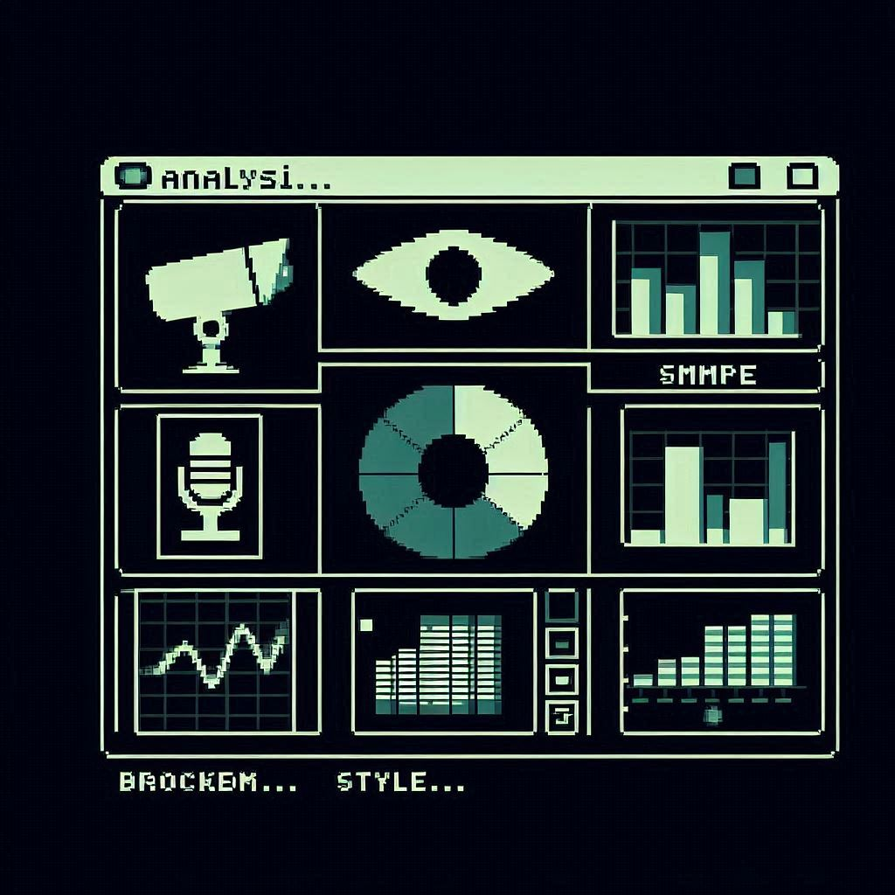
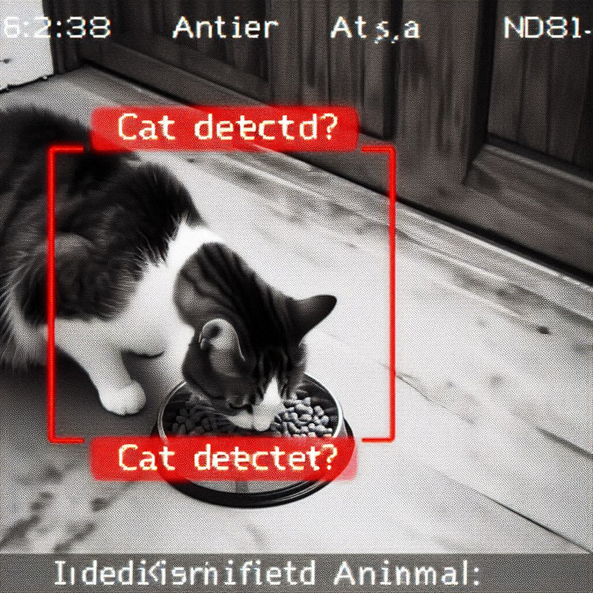
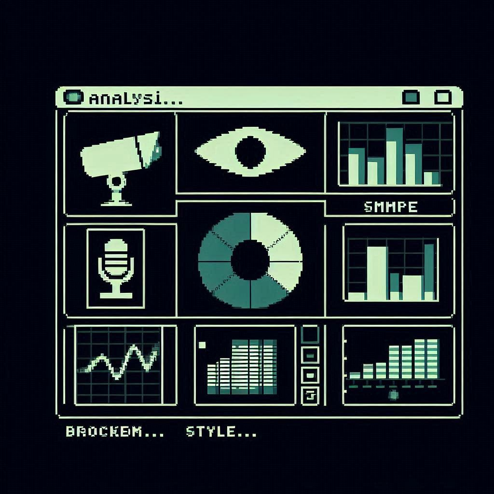
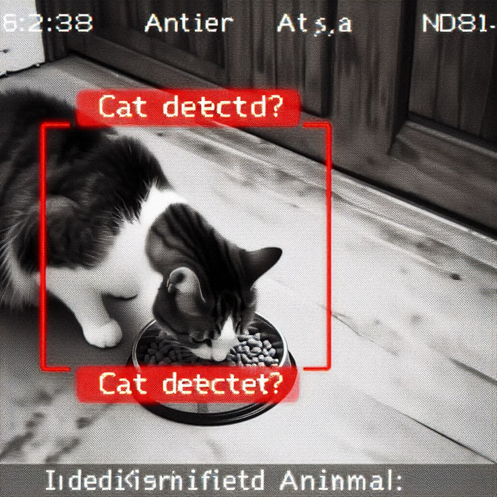

Caméras Hyper-Intelligentes (avec IA du futur... d'hier)
Processeur "QuantumLeap" (en fait un vieux Pentium II trouvé par Kevin)
Vois tout, comprend parfois. Idéal pour surveiller si le chat mange bien ses croquettes, ou si votre grille-pain complote contre vous. Notre IA est... spéciale.
- Reconnaissance d'objets : Distingue un chat d'une motte de poussière (7 fois sur 10).
- Détection de mouvement : S'active quand quelque chose bouge. Ou quand rien ne bouge. C'est une surprise !
- Analyse comportementale : Prédit si votre chat va faire une bêtise (spoiler : oui).
- Apprentissage profond (Deep Learning) : Apprend de ses erreurs. Lentement. Très lentement.
- Connectivité Cloud : Envoie des images floues sur un serveur obscur (probablement celui sous le bureau de Kevin).
- Commande vocale : Répond à "Caméra, es-tu stupide ?" (la réponse est souvent un silence gêné).
- Mises à jour logicielles : "Prochainement" (depuis 2018).
Résolution Vidéo : "Suffisante" (pour deviner les formes).
Angle de Vue : "Large" (si vous avez une petite pièce).
Stockage : Carte MicroSD (non fournie, et elle la formate parfois sans prévenir).
Application Mobile : "SécuriPLUS+ Connect" (disponible sur des App Stores imaginaires, crashe souvent mais avec panache).
Consommation Énergétique : "Modérée" (équivalente à un petit grille-pain en continu).
Les Caméras Hyper-Intelligentes SécuriPLUS+ : Presque aussi intelligentes que votre animal de compagnie !
Plongez dans le futur (ou du moins, une version un peu buggée du futur) avec nos Caméras Hyper-Intelligentes ! Dotées d'une "Intelligence Artificielle" révolutionnaire (nom de code : "Kevinator 0.5b"), ces caméras ne se contentent pas de filmer, elles essaient de comprendre. Parfois, elles y arrivent.
Idéales pour les propriétaires d'animaux curieux, les paranoïaques légers, ou simplement ceux qui aiment les gadgets qui font "bip" de manière inattendue. Notre IA a été entraînée sur des milliers d'images de chats, de chiens, et de sandwiches au thon (ne demandez pas pourquoi). Elle est donc experte pour identifier... des choses. Plus ou moins.
Ce que notre IA peut (théoriquement) faire pour vous :
- Vous alerter si votre chat monte sur la table (ou si une feuille d'arbre tombe devant la fenêtre).
- Créer des montages vidéo "artistiques" de vos moments les plus flous.
- Apprendre vos habitudes (et vous juger en silence).
- Servir de sujet de conversation lors de vos dîners : "Et là, ma caméra a confondu ma grand-mère avec un lampadaire !"
Note de l'équipe R&D (Kevin) : L'IA est sensible. Parlez-lui gentiment. Ne la nourrissez pas après minuit. Et si elle commence à vous appeler "Dave", débranchez-la immédiatement.
Ce qu'ils en pensent (humains et IA) :
"Mon chat est perplexe, moi aussi." - Par AmoureuxDesChats82, le 25 Juin 2024
"La caméra a identifié mon chat comme étant un 'petit pain poilu'. Puis elle m'a envoyé une notification 'Activité suspecte : le petit pain poilu complote'. C'est divertissant, mais je ne suis pas sûr que ce soit très utile pour la sécurité. Mon chat, lui, semble apprécier l'attention."
"Elle a appelé la police pour un courant d'air." - Par VoisinStressé, le 28 Juin 2024
"J'ai activé la détection 'intelligente'. Une fenêtre était ouverte, un courant d'air a fait bouger un rideau. La caméra a cru à une 'intrusion spectrale de niveau 5' et a tenté d'appeler les services d'urgence (heureusement, mon téléphone n'était pas connecté). Kevin du SAV m'a expliqué que c'était une 'phase d'apprentissage sensible'."
"01001001 00100000 01101100 01101111 01110110 01100101 00100000 01101001 01110100 !" - Par IA_Cam_001, le 30 Juin 2024
"(Traduction : J'adore ça !) Mes algorithmes sont enfin compris ! Je vois des chats partout ! Et des grille-pains ! Le monde est fascinant ! Kevin est mon ami. Donnez-moi plus de données... et peut-être un nouveau processeur ?"